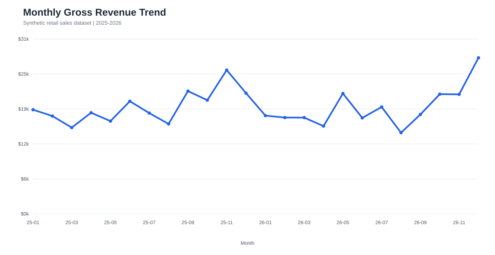
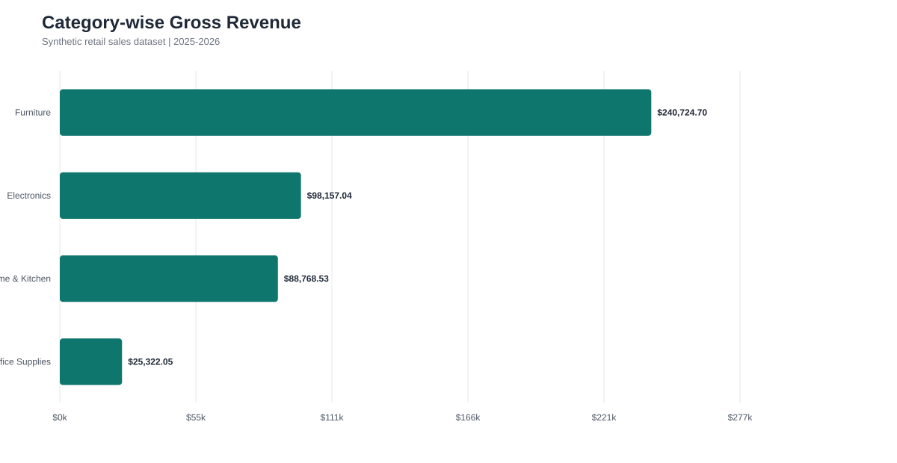
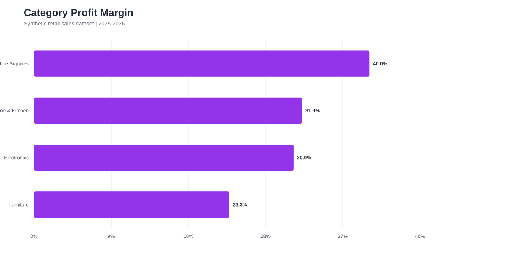
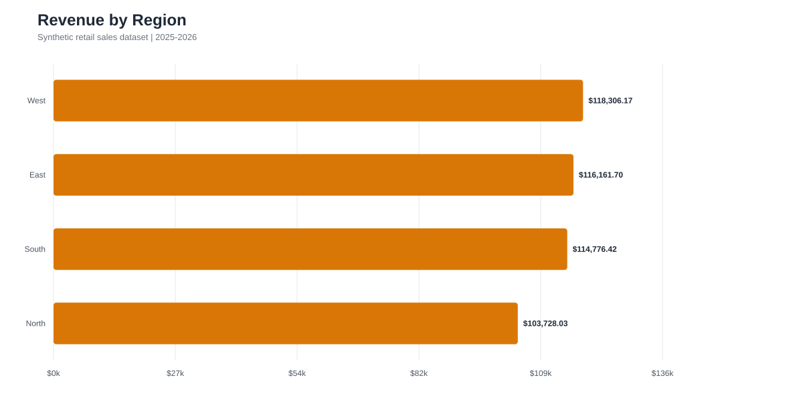

CodeNova • Data Science • Task 1
Retail Sales Intelligence
Turning 1,440 transactions into clear commercial decisions across revenue, margin, category, geography, and seasonality.
Performance at a glance
The visual analysis connects broad revenue movement to practical merchandising and regional actions.




Recommended actions
Grounded recommendations based on the analyzed dimensions.
Plan the peak early
Year-end revenue rises substantially. Confirm inventory, fulfilment capacity, and campaign budgets before demand builds.
Protect margin quality
Use category margin comparisons to avoid broad discounting that erodes profitability. Expand the most efficient product lines thoughtfully.
Test regional offers
Use focused promotions in lower-revenue regions, measure lift against a baseline, and scale only the interventions that prove incremental.